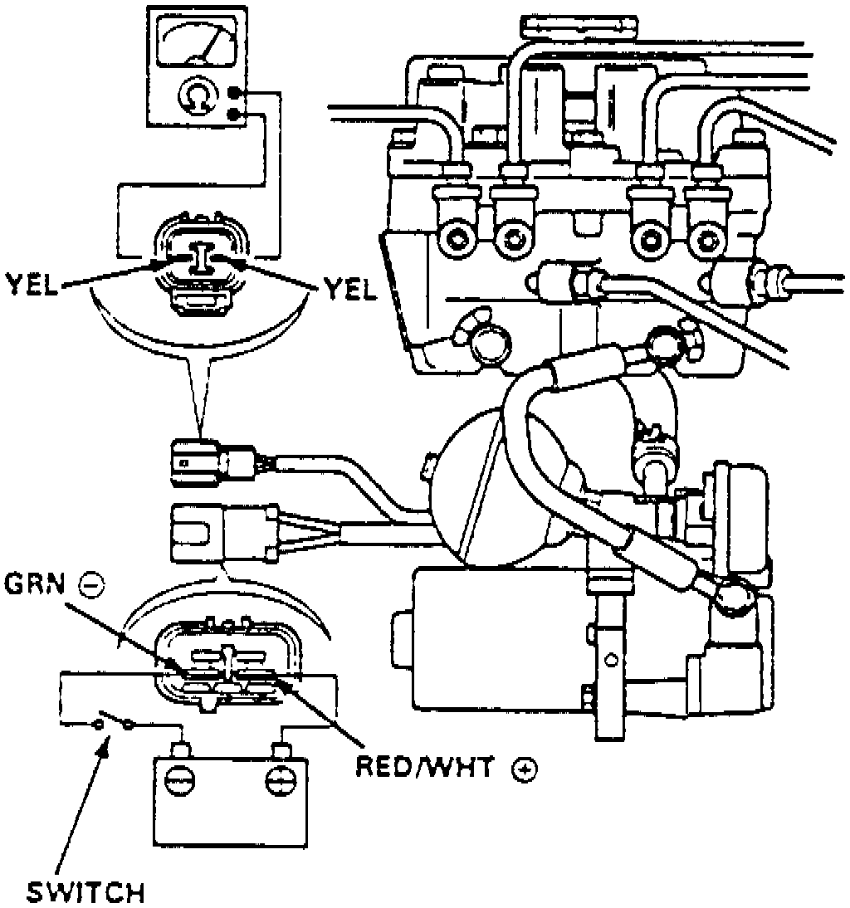
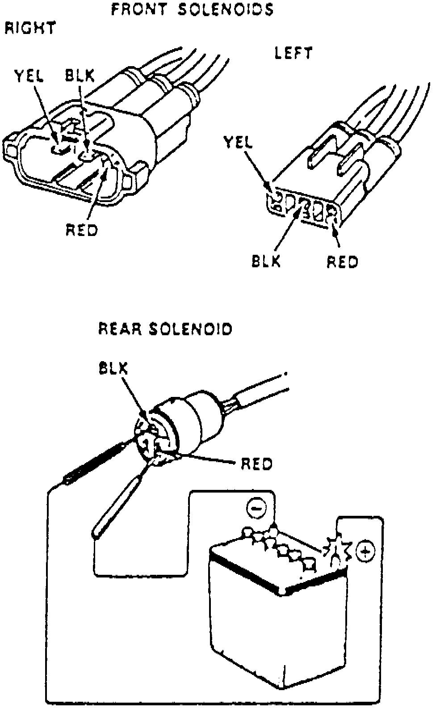

Solenoid Leak Test
Fig. 90 Solenoid Leak Test:

Fig. 92 Front & Rear Solenoids:

1. Connect suitable circuit tester between black and yellow or yellow and yellow terminals of accumulator pressure switch connector.
2. Connect positive lead of fully charged 12 volt battery to red/white terminal of power unit motor connector (Yellow) and negative lead to green terminal. Install switch within positive lead, Figs. 90 and 92.
3. Turn switch on to allow sufficient pressure to build up in accumulator, then check for continuity. If continuity is indicated, run power unit for four more seconds, then turn switch off.
4. After switch is off for one minute, recheck continuity, ensuring pipe joint is secure. A faulty solenoid is indicated, if continuity is not present.
5. Apply 12 volts across black and red terminal of solenoid connector momentarily. Modulator reservoir may overflow.
6. Check solenoid for hisses or squeaks. Ensure solenoid does not hiss or squeak after it has clicked into position. If solenoid hisses or squeaks, replace modulator.
7. Check pressure switch for continuity within one minute. Continuity should be indicated, if not replace solenoid.